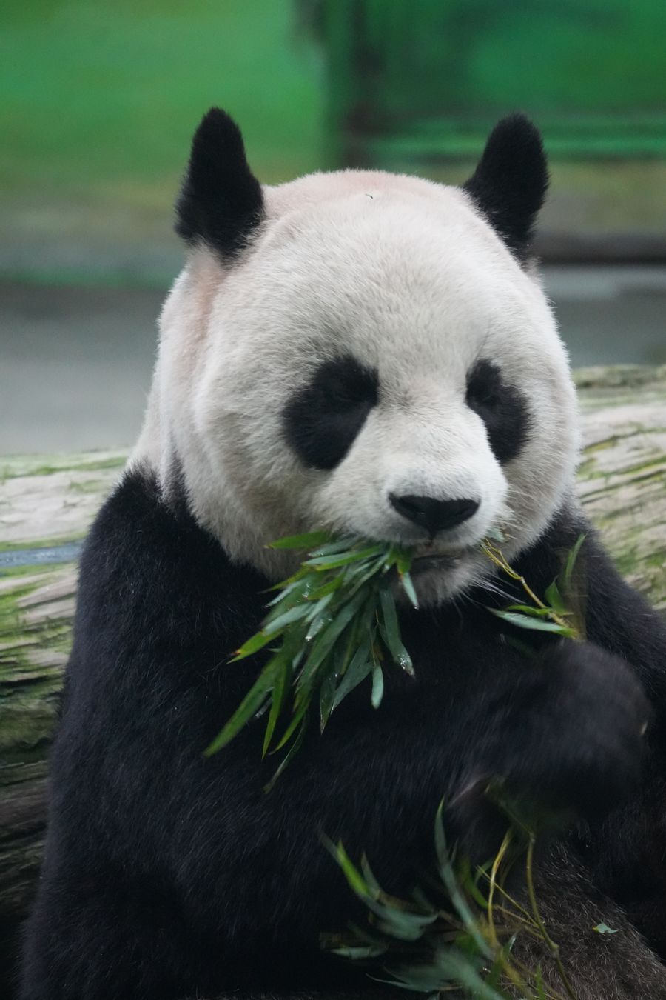
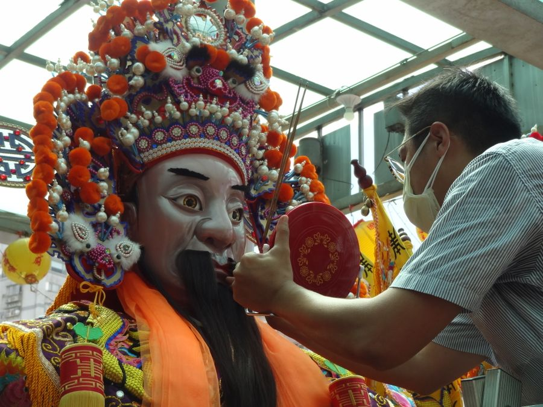
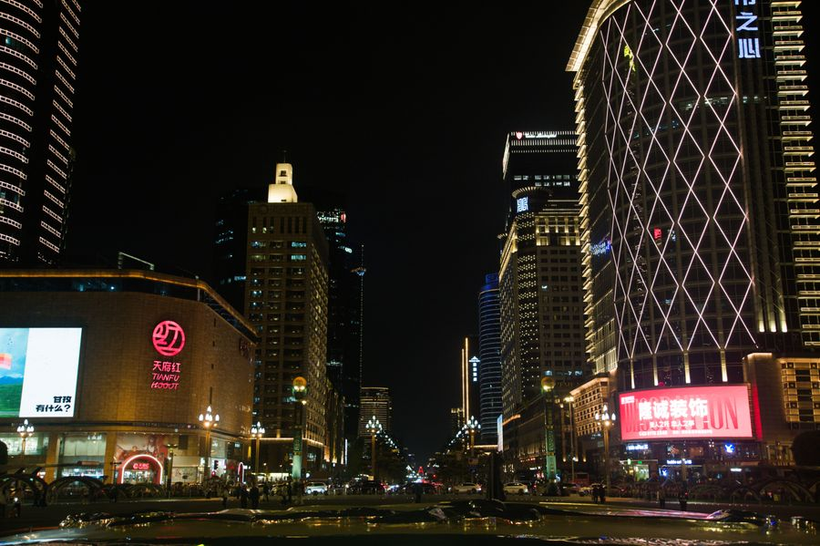
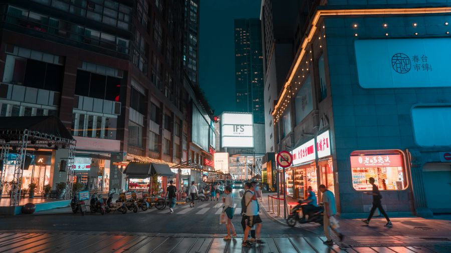

✦ CHENGDU CYBER ANIME ✦
成都
天府之国 · 动漫幻城
古蜀文明与赛博霓虹交织成一场梦幻漫游——火锅香气飘进摩天光影，熊猫在竹影与全息世界之间打盹。欢迎来到成都，一座自带BGM 与滤镜的动漫之城。
探索幻境EXPLORE CHENGDU
蓉城 · 四韵
四大名片 · 四种幻境 · 每一面都浪漫爆表

熊猫之都
圆滚滚的国宝在晨曦里打盹，在竹影间翻滚撒欢，是这座城市最治愈的二次元主角。
麻辣幻味
红油翻滚的火锅、椒香四溢的串串，一口入魂的麻辣鲜香，让味蕾开启冒险副本。

川剧变脸
一抬手风云变幻，一转身五色脸谱。千年川剧遇上霓虹舞台，戏未散、梦未醒。

太古里 · 霓虹
时尚与古韵在玻璃幕墙间共振，潮玩街区霓虹闪烁，赛博成都的封面担当。
🐼
ANIME CHENGDU
动漫成都
用动漫的方式打开成都：IFS 的巨型熊猫探出大楼，九眼桥的霓虹倒映锦江，盖碗茶的雾气里藏着次元结界。这座不夜城连路边的小熊猫都自带主角光环，随时等你来触发隐藏剧情。

TASTE OF CHENGDU
川味 · 食光
从清晨的担担面，到深夜的宵夜摊，成都的烟火气永不下线
九宫格火锅HOT POT
担担面DANDAN NOODLES
龙抄手WONTONS
三大炮SNACK
钵钵鸡SKEWERS